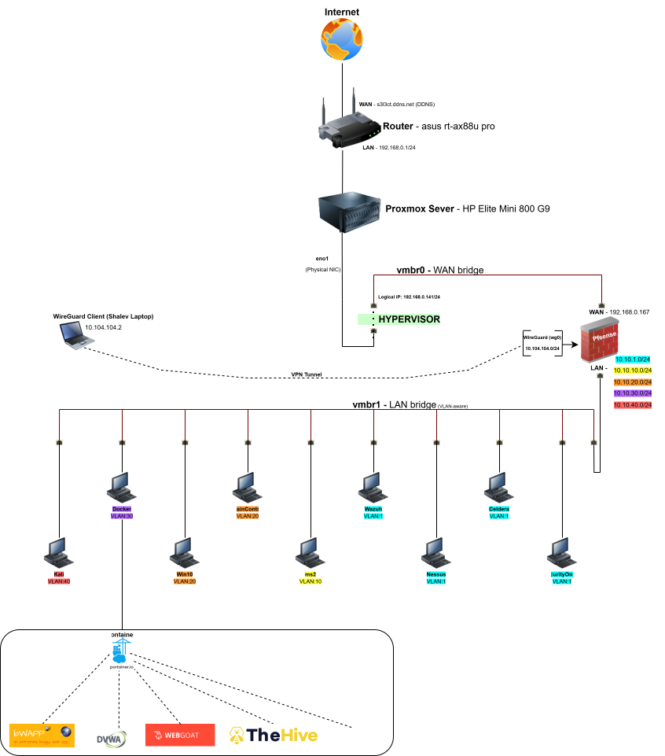

// Project · Cybersecurity Homelab
A production-grade cybersecurity homelab built from scratch — featuring five isolated VLANs, a complete SOC stack, Active Directory infrastructure, vulnerable targets, and a hybrid cloud connection to Azure via IPSec VPN.
// Overview
This lab is a self-built, fully segmented cybersecurity environment running on Proxmox VE. The goal is to simulate a realistic enterprise network — complete with an internal SOC, exploitable targets, an Active Directory domain, containerized web apps, and a cloud extension — in order to practice real offensive and defensive security techniques in a controlled setting.
Every component is deliberately isolated. pfSense acts as the central firewall and router, enforcing strict inter-VLAN firewall rules so that the attacker machine on VLAN 40 can only reach targets it's allowed to reach, while the SOC on VLAN 1 has visibility across the entire environment.
// Infrastructure
Proxmox VE is the foundation of the entire lab. It runs all virtual machines using KVM and provides the VLAN-aware bridge infrastructure that pfSense uses to route traffic between segments.
| Management | 192.168.0.141 · Port 8006 |
| Bridges | vmbr0 (WAN) vmbr1 (LAN, VLAN-aware trunk) |
| VMs | 10 virtual machines across all segments |
VM Inventory
| ID | Name | IP | VLAN | Role |
|---|---|---|---|---|
| 101 | pfSense | 10.10.1.254 | VLAN 1 | Firewall / Gateway |
| 102 | Kali | 10.10.40.50 | VLAN 40 | Attacker workstation |
| 103 | Docker-Host | 10.10.30.10 | VLAN 30 | Container host |
| 104 | Metasploitable2 | 10.10.10.20 | VLAN 10 | Vulnerable Linux |
| 105 | Wazuh | 10.10.1.60 | VLAN 1 | SIEM |
| 106 | Nessus | 10.10.1.70 | VLAN 1 | Vulnerability scanner |
| 107 | Caldera | 10.10.1.80 | VLAN 1 | Adversary simulation |
| 108 | SecurityOnion | 10.10.1.90 | VLAN 1 | IDS / NSM |
| 109 | DomainController | 10.10.20.10 | VLAN 20 | Active Directory |
| 110 | Win10 | 10.10.20.50 | VLAN 20 | Domain workstation |
pfSense is the nerve center of the lab. It handles all routing between VLANs, enforces firewall rules that keep segments isolated, runs DHCP and DNS for each network, applies NAT toward the WAN, and terminates both the WireGuard VPN (remote access) and the IPSec tunnel to Azure.
| WAN Interface | vmbr0 — receives IP from home router (192.168.0.x) |
| LAN Interface | vmbr1 — VLAN-aware trunk carrying all lab VLANs |
| VLAN Gateways | 10.10.1.254 · 10.10.10.254 · 10.10.20.254 · 10.10.30.254 · 10.10.40.254 |
| Services | DHCP per VLAN · DNS Resolver · NAT → WAN · Firewall rule separation · Logging |
| Segmentation | No L2 connectivity between VLANs — all inter-VLAN traffic explicitly firewall-permitted |
// Network Segmentation

The SOC VLAN hosts all security monitoring and detection tools. It is isolated from user and target networks — accessible only through pfSense firewall rules or WireGuard VPN. From here, the SOC has visibility across the entire lab.
| Wazuh | 10.10.1.60 — SIEM, log aggregation, alert correlation |
| SecurityOnion | 10.10.1.90 — Network IDS, traffic analysis, NSM |
| Nessus | 10.10.1.70:8834 — Vulnerability scanning across all VLANs |
| Caldera | 10.10.1.80 — Adversary simulation, MITRE ATT&CK automation |
| DHCP Range | 10.10.1.50 – 10.10.1.100 |
| Access | WireGuard VPN only — not exposed to Internet |
Hosts OS-level vulnerable machines used for exploitation practice. The VLAN is isolated — traffic in and out is strictly controlled by pfSense. Attacks originate from VLAN 40 (Kali), and detections are validated in VLAN 1 (SOC).
| Metasploitable2 | 10.10.10.51 — Intentionally vulnerable Linux VM |
| DHCP Range | 10.10.10.50 – 10.10.10.100 |
| Use Cases | OS exploitation · Privilege escalation · Lateral movement · SOC detection validation |
A Windows domain environment simulating an internal corporate network. Used for AD-based attack and defense scenarios — from Kerberoasting and Pass-the-Hash to GPO hardening and detection tuning in Wazuh.
| DomainController | 10.10.20.10 — Windows Server · AD DS · DNS |
| Win10 | 10.10.20.100 — Domain-joined workstation |
| DHCP Range | 10.10.20.100 – 10.10.20.120 |
| Use Cases | AD attacks · Identity services · GPO testing · Windows endpoint simulation |
Hosts the Docker infrastructure for vulnerable web applications and incident response platforms. Containers run on a MACVLAN network, giving each one its own IP address within the VLAN. TheHive and Cortex run here for case management and observable enrichment.
| Docker-Host | 10.10.30.50 — Ubuntu + Portainer + MACVLAN |
| DVWA | Damn Vulnerable Web App — OWASP Top 10 practice |
| bWAPP | Buggy Web App — 100+ web vulnerabilities |
| WebGoat | OWASP WebGoat — Docker-Host:8080 |
| TheHive | 10.10.30.50:9000 — Incident response & case management |
| Cortex | 10.10.30.50:9001 — Automated observable analysis & enrichment |
| IP Allocation | 10.10.30.129 – 10.10.30.158 (containers) |
A dedicated offensive segment, isolated from all other VLANs. Kali Linux lives here and is used to launch controlled attacks against targets in VLAN 10, VLAN 20, and VLAN 30. pfSense firewall rules determine exactly what Kali can reach — making this a safe, controlled red-team environment.
| Kali Linux | 10.10.40.50 — Full offensive toolkit |
| DHCP Range | 10.10.40.50 – 10.10.40.100 |
| Use Cases | Exploitation · Adversary simulation · SOC detection testing · Red-team scenarios |
// Security Operations
The SOC stack on VLAN 1 provides end-to-end visibility across the lab. Logs flow from every segment into Wazuh, SecurityOnion captures traffic at the network level, Nessus scans for vulnerabilities, and Caldera automates adversary simulations — creating a full detect-and-respond loop.
Collects logs from all VMs via agents and syslog. Correlates events, generates alerts, and provides a central dashboard for security monitoring. Running at 10.10.1.60.
Monitors network traffic across VLANs. Detects anomalies, intrusion attempts, and lateral movement at the packet level. Complements Wazuh's host-based view with full network visibility. Running at 10.10.1.90.
Scans all lab segments for known vulnerabilities, misconfigurations, and exposed services. Results are used to prioritize hardening and to verify that Wazuh detects the expected findings. Running at 10.10.1.70:8834.
Automates MITRE ATT&CK-mapped attack chains against lab targets. Used to test whether the SOC (Wazuh + SecurityOnion) correctly detects and alerts on known TTP patterns. Running at 10.10.1.80.
TheHive manages cases and investigations triggered by Wazuh alerts. Cortex automatically enriches observables (IPs, hashes, domains) with threat intelligence. Together they simulate a real SOC triage and investigation workflow. Running at 10.10.30.50:9000/9001.
// Hybrid Cloud
The lab extends into Azure via a site-to-site IPSec / IKEv2 VPN between pfSense and the Azure VPN Gateway. This creates a true hybrid environment where Azure VMs can communicate directly with on-premises lab segments — enabling cloud attack simulation, pivot testing, and hybrid SOC scenarios.
| VNet | lab-vnet-01 · 10.30.0.0/16 · Switzerland North |
| Default Subnet | 10.30.1.0/24 |
| VPN Gateway | vnet-gateway-lab · VpnGw1AZ · Route-Based · IKEv2 |
| On-Prem Endpoint | lab-local-network-gateway · pfSense WAN (s3l3ct.ddns.net) |
| Advertised Routes | 10.10.1.0/24 · 10.10.10.0/24 · 10.10.20.0/24 · 10.10.30.0/24 |
| Azure VM | testvm · 10.30.1.x · Sandbox / connectivity testing |
| Security | No public inbound — NSG allows RDP/SSH only as needed |
The Azure VM can reach Wazuh, SecurityOnion, AD, and target machines through the IPSec tunnel — enabling cloud malware sandboxing, remote attack simulation, and extending the SOC into the cloud.
// Remote Access
Remote access to the entire lab is handled by a WireGuard tunnel terminating on pfSense. Once connected, the client has access to all VLANs and the Proxmox management interface — just like being on the local network.
| Interface | tun_wg0 (Home Lab Tunnel Net) |
| Listen Port | UDP 51820 |
| Server Address | 10.104.104.1/24 |
| DDNS | s3l3ct.ddns.net |
| Peer — PC | 10.104.104.2/32 · Full lab access |
| Peer — iPhone | 10.104.104.3/32 · Full lab access |
| Allowed IPs | 10.10.1.0/24 · 10.10.10.0/24 · 10.10.20.0/24 · 10.10.30.0/24 · 10.104.104.0/24 · 192.168.0.141/24 |
| Firewall | Allow UDP/51820 on WAN · WireGuard interface → Any (lab usage) |